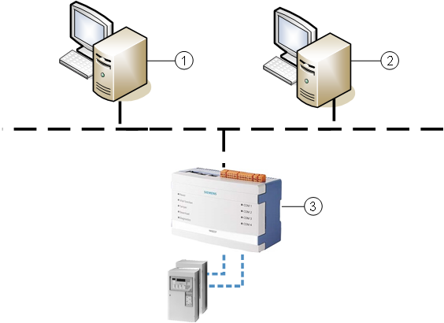

Link NK823x to Multiple Management Stations
(Optional) Link Multiple Desigo CC Stations to the NK823x
This step is only required when multiple and independent Desigo CC stations (server or FEP) are connected to the NK823x.
In multi-host NK823x solutions, all stations must have the same NK823x configuration, with a few exceptions:
- In the BACnet driver, the BACnet Device Identifier, which is unique for each station on the BACnet network.
- In the NK823x > Ethernet configuration, the additional NK823x connections, which must refer to the other station drivers, with their own BACnet Device Identifier.
On each station, you can configure the additional connected stations as BACnet clients under the BACnet protocol of the Ethernet port.
You need to specify the unique Instance number (BACnet Device Identifier) of the BACnet driver of the other stations.
That will allow each station to know about the connection status of the other stations.
Configure Additional Stations
For each additional connected station, perform the following procedure:
- In System Browser, select Project > Field Networks > [BACnet Network] > [NK823x] > [Ethernet] > BACnet protocol.
- Select the NK8000 tab.
- Click New
 and select New BACnet Client.
and select New BACnet Client. - In the New Object dialog box:
a. Enter a name and description.
b. In the Instance number field, enter the BACnet device ID (the Instance number of the BACnet driver) of the other Desigo CC station linked to the NK823x.
c. Click OK. - The new BACnet clientis added to System Browser and automatically selected.
- (Optional) Repeat the procedure as necessary to monitor all additional connected stations.
The NK823x can be linked to up to three additional Desigo CC stations.
The image below illustrate a simple example:

1 | Server station 1 has a BACnet driver with Instance number (BACnet Device Identifier) = 63. |
2 | Server station 2 has a BACnet driver with Instance number (BACnet Device Identifier) = 64. |
3 | NK823x with two Ethernet connections. |
Align the NK823x Configuration on Multiple Connected Stations
In multi-host NK823x solutions, you must download the same NK823x configuration from all stations.
This download is required even if the same NK823x configuration was already downloaded from another station.
Any difference in the NK823x configuration on the stations, for instance a serial line connection or a local DF8000 unit, causes a misalignment event on the other stations.
To correct this condition, you can proceed in two ways:
Method 1: Make the NK823x configuration the same on all stations
- On the misaligned station, configure the NK823x in the same way as done on the first station.
NOTE: Consider the BACnet Device Identifiers to customize on each station. - Download the NK823x (see below).
- Repeat the procedure as necessary to realign all connected stations.
Method 2: Restore the project configuration from the fist station and adjust the BACnet Device Identifier
Alternatively, if the entire project configuration is the same among the stations, you can backup from the first station and then restore it on the others.
At that point, on each station, you need to adjust the settings of the BACnet device identifiers. Proceed as follows:
- Perform a project backup of the first station where the NK823x is configured correctly.
- On a misaligned station, make sure you know the Instance number (BACnet Device Identifier) of the BACnet driver, and restore the project backup.
- Modify the Instance number of the BACnet driver.
- Stop and then start the BACnet driver again.
- Delete the BACnet client, if present, from NK823x > Network > BACnet protocol.
- Create the BACnet client again, indicating the Instance number of the first station (see Configure Additional Stations above, repeat as necessary for all stations).
- Download the NK823x (see below).
- Repeat the procedure from step 2 as necessary to realign all connected stations.